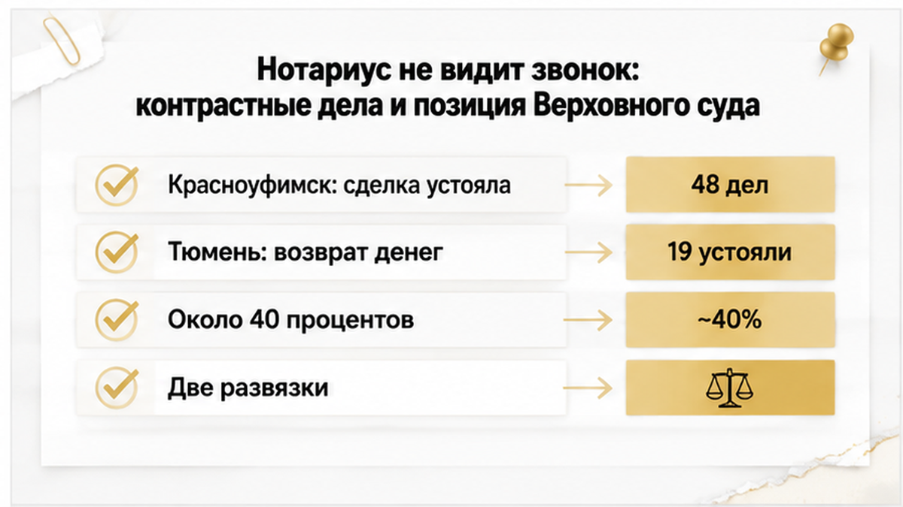
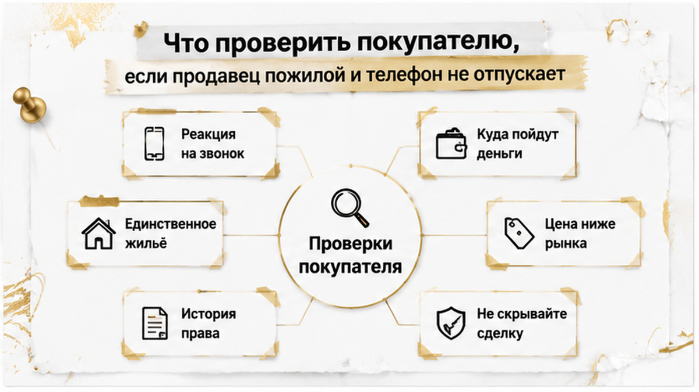

После каждой такой истории мне пишут одно и то же: «А если бы через нотариуса — устояло бы?»
Отвечаю неприятно: иногда да. Только это аргумент не в пользу спокойствия, а в пользу внимательности.
Красноуфимский район Свердловской области, июнь 2025 года. Ольга нотариально продаёт долю в доме и земельный участок за 3,95 млн рублей. В тот же день около 3,9 млн уходят мошенникам — тот же телефон, тот же «сотрудник безопасности», тот же сценарий со срочностью. Дальше Ольга идёт в суд оспаривать сделку.
И проигрывает.
Две психиатрические экспертизы дали одинаковое заключение: расстройства нет, в момент подписания женщина понимала значение своих действий. Суд добавил второй аргумент — покупатель не знал и не должен был знать о телефонном давлении. В требованиях отказали. Доля и участок остались у покупателя. Деньги остались у мошенников.
Сравните с Тюменью. Там реституцию дали, потому что Институт имени Сербского увидел психологические нарушения в период мошеннического воздействия, а суд разобрал обстоятельства вокруг покупателей. Здесь экспертиза сказала «понимала» — и сделка устояла. Один и тот же телефонный сценарий, две противоположные развязки. Разница не в форме договора. Разница в том, что написали эксперты и как со стороны выглядело поведение покупателя.
Теперь цифры, из-за которых я вообще сел за этот текст. Центр доказательной экспертизы Института Гайдара разобрал 298 судебных дел за 2023–2026 годы — споры по сделкам на фоне телефонного мошенничества. Нотариальных сделок в выборке оказалось 48. Устояли примерно 19. Около 40% от этих сорока восьми.
Читать это надо аккуратно, и я специально подчеркну. Около 40% — это не вероятность того, что любая нотариальная сделка устоит. Это доля выживших среди тех нотариальных сделок, которые уже дошли до суда после мошеннической схемы. То есть: попали в такую историю с нотариальным договором — и шансы удержать квартиру примерно четыре к десяти. Шесть покупателей из десяти вышли из суда без квартиры. С нотариусом в деле.
Причина обидно простая. Нотариус проверяет личность, документы и форму сделки. Он не проверяет, кто разговаривает с продавцом по телефону вечером накануне и кто диктует ей, что отвечать в кабинете. Скрытое давление не видно из удостоверительной надписи. Печать удостоверяет процедуру, а не свободу воли.
Про «все проверки прошли, а потом всё развалилось» у меня был отдельный разбор — там ипотеку одобрили, а регистрацию отменили из-за строки в ЕГРН. Банк, оценщик, юрист — все сказали «чисто». Строка всё равно нашлась.
Есть и федеральный ориентир, только не путайте его с Тюменью. Верховный суд 10 марта 2026 года рассмотрел дело № 84-КГ26-1-К3. Это не тюменское дело и не нотариальное: сделка шла через сервис безопасной сделки Сбербанка 5 октября 2023 года. Продавец — Евсейчик Т. П., 73 года, единственное жильё, цена 1,9 млн рублей, ниже рынка. Мошенники убедили её «временно передать» квартиру, деньги в тот же день ушли курьеру. Институт Сербского поставил F07.01, высокую внушаемость и заблуждение в момент сделки.
ВС оставил сделку недействительной по статьям 166, 167 и 178 ГК РФ. Право вернулось к продавцу, продавец должна вернуть 1,9 млн. И вот что здесь важно именно для покупателя: суд отдельно оценивал поведение самого покупателя. Заниженная цена плюс очевидное заблуждение пожилого продавца — обстоятельства, которые должны были вызвать вопросы. Не вызвали — ссылаться на добросовестность стало заметно сложнее.
Складываю три дела в один вывод. Сам по себе факт, что продавец после сделки перевёл деньги мошенникам, договор недействительным не делает — Ольга это доказала от обратного. Но стоит добавиться заключению экспертизы о заблуждении, заниженной цене или странностям, которые покупатель мог заметить, — весы уходят в сторону реституции. Психиатрическая оценка перед сделкой, видеозапись подписания, присутствие родственников, проверка истории права, титульное страхование — всё это снижает риск. Гарантии не даёт ни одна из этих мер.

Теперь практика. Она вырастает ровно из этих трёх дел, а не из общих рассуждений про бдительность.
Я не отговариваю покупать у пенсионеров. Половина хорошей тюменской вторички — это как раз аккуратные бабушкины квартиры с ремонтом восьмидесятых, живым двором и школой через дорогу. Отговариваю покупать вслепую.
И правило, которое я повторяю на каждом показе: сомнения проверяются до задатка. После задатка проверка превращается в переговоры, а переговоры под давлением сроков всегда заканчиваются в пользу того, кто торопит.